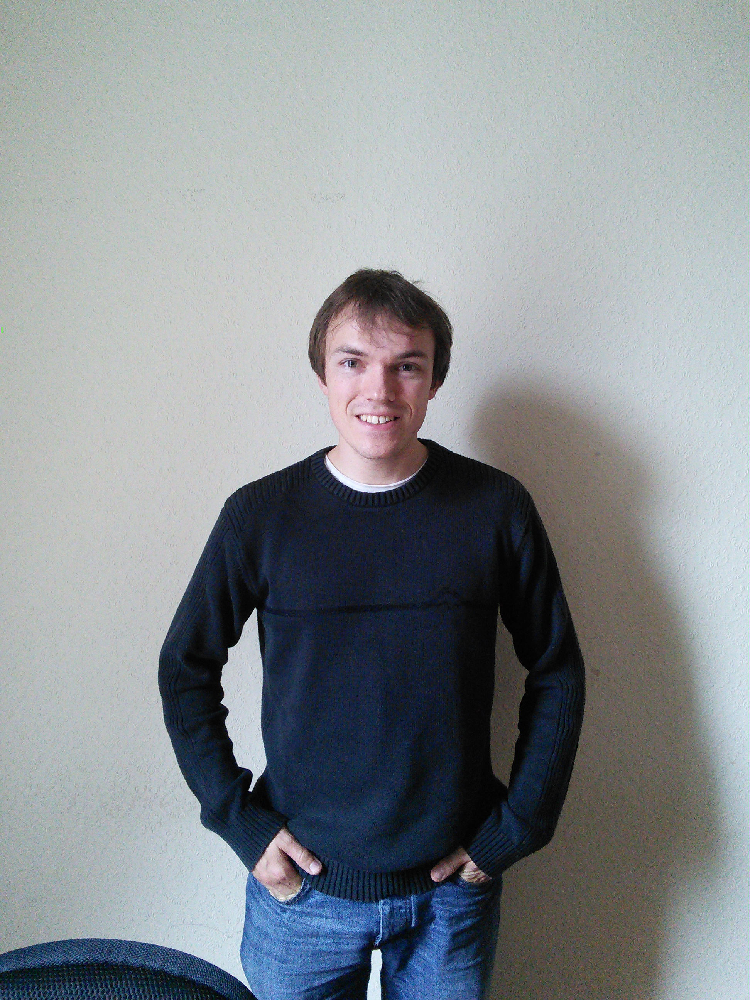

I am a data scientist working in the financial services industry. My inetrests include high performance computing, machine learning and big data analysis.
Formerly, I was a postdoctoral research fellow working in Prof. Tom Ray's star formation group at the Dublin Instiute for Advanced Studies (DIAS). My research interests focused on jets from both Young Stellar Objects and Active Galactic Nuclei, long baseline radio interferometry, radio polarimetry and scientific software development. I was part of a team which obtained the very first detection of a Young Stellar Object with the next-generation radio telescope LOFAR.
A list of my publications from is available from the NASA ADS ordered by date or by citations.
Many of these publications are also available on Arxiv.
I received my PhD from University College Cork in 2014 under the supervision of Prof. Denise Gabuzda. My thesis, "The development of new methods for high resolution radio astronomy imaging", is available from the UCC CORA archive.
Research
I have worked on very low frequency studies of YSO jets with LOFAR, the Low Frequency Array. This work involved calibrating and imaging large (>10TB) datasets and performing statistical analysis on the results. We also worked on long-baseline observations with LOFAR - this will be very important to make full use of the upcoming Irish LOFAR station which should be operational sometime in 2017. I am particularly interested in the computational elements of reducing and analysing big datasets using High Performance Computing facilities such as ICHEC's fionn supercomputer. My previous research has been developing algorithms, techniques and software for high resolution radio imaging of the relativistic jets from AGN.
Software
As part of my research I wrote software for use in radio astronomy and astrophysics. All of my software is free and available at GitHub, please contact me if you have any questions about using it.
Outreach
I have given public talks about astronomy and astrophysics at Dunsink Observatory. Part of the Dublin Instiute for Advanced Studies, Dunsink observatory has regular stargazing events, tours and public talks from members of the institute and visitors.